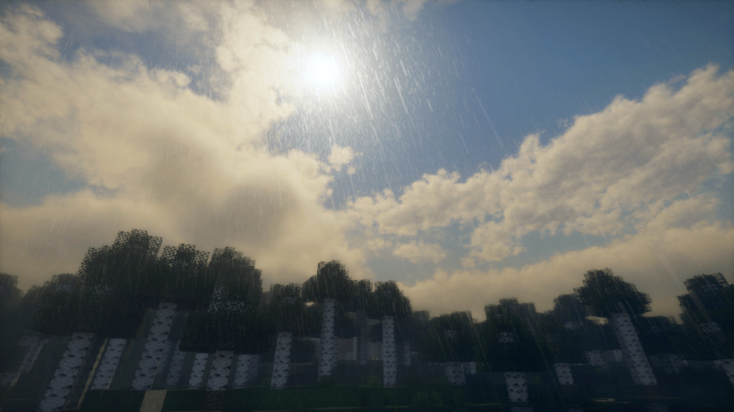

Developer Letter 1 (22/12/2023)
En este emocionante día, te invitamos a sumergirte en el extraordinario universo que
ha cobrado vida en los últimos meses con el próximo servidor de Minecraft llamado
'FightsCraft Of Legends'. En el corazón de esta aventura se encuentra una apasionada
dedicación a la innovación y una determinación inquebrantable de crear una experiencia
de juego incomparable
Te los presentamos ahora mismo.
—————
VISUAL
En los rincones encantadores de "FightsCraft of Legends", cada modificación visual ha
sido elegida meticulosamente para evocar emociones y atmósferas únicas. La calidad visual aporta
sutiles matices a los paisajes, revelando juegos de luz que danzan a través de las copas de los
árboles y se reflejan en ríos sinuosos.
Estos matices van desde el realismo impactante de la calidad gráfica Ultra hasta las
atmósferas más etéreas de las versiones Baja y Media, permitiendo a los jugadores personalizar su
experiencia según sus preferencias visuales.

Las vibrantes tonalidades de los gráficos en modo Extremo abrazan el mundo con una luz
intensamente envolvente, mientras que la versión en Alta mantiene un sutil equilibrio entre
el realismo y la estética del juego. Las versiones en Baja y Media ofrecen una estética
simplificada, perfecta para aquellos que prefieren la inmersión manteniendo un rendimiento óptimo
Estas elecciones visuales se combinan para crear un lienzo en constante evolución, reaccionando
a los ciclos día-noche y las condiciones climáticas, garantizando una experiencia visual dinámica
y cautivadora en cada rincón del mundo de "FightsCraft of Legends".
GAMEPLAY
Sumérgete en una aventura cautivadora donde cada movimiento cuenta. En "FightsCraft of Legends",
la experiencia de juego se define por características únicas, como la capacidad de empuñar armas
en ambas manos. Esta libertad táctica permite a los jugadores personalizar su estilo de combate, ya sea
empuñando una espada y un escudo en tándem o adoptando un enfoque más agresivo con unarma
en cada mano.

El sistema de combate está diseñado para ser no solo estratégico sino también fluido, ofreciendo combos
sin problemas que premian el dominio de los movimientos. Los jugadores pueden descubrir cadenas
especiales, desbloquear habilidades únicas y perfeccionar su técnica a medida que avanzan. Cada elección
tiene un impacto; cada movimiento puede ser el comienzo de un combo épico, añadiendo una dimensión
dinámica y emocionante a cada enfrentamiento.
"FightsCraft of Legends" enfatiza la libertad de elección en el combate, alentando a los jugadores a
experimentar y desarrollar su propio estilo, creando una experiencia de juego personalizada e inolvidable.
MAP
El mapa del servidor "FightsCraft of Legends" es una verdadera obra de arte en constante evolución,
lanzando su encanto más allá de los horizontes visibles. Las grandiosas ciudades medievales, joyas de
la civilización, no son meras decoraciones estáticas, sino centros vibrantes de actividades dinámicas.
Cada una de estas ciudades alberga una economía simulada donde los jugadores pueden comerciar,
participar en misiones locales e interactuar con PNJ llenos de personalidad.
Las vastas extensiones que se extienden entre estos bastiones urbanos pintan un lienzo diverso
de la naturaleza, ofreciendo aventuras tan ricas como variadas. Desde majestuosas montañas
cubiertas de nieve hasta bosques místicos llenos de extrañas criaturas, cada rincón del mapa
revela paisajes y misterios únicos para explorar. Estas vastas extensiones no son solo pasajes,
sino territorios completos, invitando a los jugadores a descubrir secretos ocultos, mazmorras
perdidas y tesoros insospechados.

Navegar por este vasto universo requerirá agudas habilidades de supervivencia, ya que los paisajes
pueden ser tan peligrosos como hermosos. Los jugadores deberán aventurarse fuera de los caminos
trillados para descubrir ubicaciones secretas, poniendo a prueba su capacidad para superar los
desafíos de la naturaleza mientras exploran los misterios ocultos en los rincones de cada región.
ACCESIBILIDAD
Comprometido a proporcionar una experiencia inclusiva, el servidor "FightsCraft of Legends" tiene
como objetivo abrir su mundo a todos los aventureros. El desarrollo continuo de un lanzador dedicado
stá orientado a simplificar el proceso de conexión, proporcionando una interfaz amigable que facilita
la entrada al universo del servidor.
Ya sea que utilices una versión premium o crackeada de Minecraft, todos los jugadores son bienvenidos a
unirse a "FightsCraft of Legends" y participar en esta épica aventura, eliminando cualquier barrera
para la aventura.
FASE DE PRUEBAS
Cada sugerencia, cada experiencia compartida, se convierte en un pilar sobre el cual descansa nuestra
incansable búsqueda de la perfección.
—————
Este es un breve resumen de en qué hemos estado trabajando en los últimos meses. Más detalles seguirán en
los próximos meses. Mantente informado y asegúrate de unirte a nuestro Discord y seguirnos para conocer las
últimas actualizaciones y perspectivas en los próximos días.
-FightsCraft Of Legends Team.